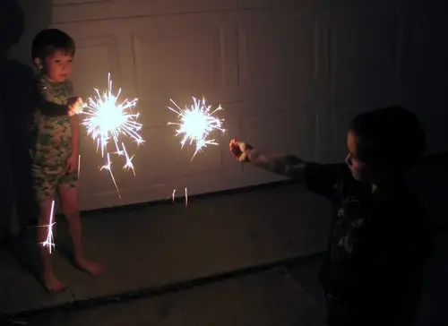

{kind=link}
The response from the medical personnel was interesting, too. She did not treat me with hostility, but with curiosity as one would someone, some thing, from another planet. At that moment, I felt very alone in my faith, even if secure in it.
When I am conversing with my faith brothers and sisters, I am in a grace-filled channel, and when I’m in this place, everything flows smoothly, easily. I am invigorated, using all of who I am in my actions and words, not denying my spirit. This is true freedom and it’s exhilarating. It feels right and good. When I am not in this place, I realize that no matter how endeared to my faith I might be, I am still in the world, and as long as I am that will never change. I really am an alien in that sense, not yet home. My heart will always yearn for what has not yet come.
It’s sort of an odd thing to ponder. And I don’t mean to shun the world by any means. God gave us this world, too, in order to help us learn to love. As believers, we are not called to turn our backs on the world. God wants us to be a part of it even if not fully entangled with it. Our presence is needed and we need the strength of others as we move along our journey toward the next place.
Alone as I felt that day in the screening room, it was only a few days later that someone crossed onto my path quite unexpectedly. I was at a coffee shop writing an article when he brushed past my table just a few minutes before closing. Then he backtracked, having noticed a book lying next to my laptop. “Have you read this?” he said. It was the start of a very intense, though brief, faith-filled discussion. Because our faith was the base of the discussion, it was invigorating and light-filled. Long introductions weren’t necessary. We knew we’d just bumped into a fellow faith sibling. It was as if a mini-reunion were taking place.
Following this meeting, I realized there are times in our lives as believers that we are going to feel very alone, like ducks swimming in water that is the wrong temperature for our particular feathers. But as I also have found, there will be times when God will nudge people onto our path to remind us that we are not alone at all, that there are others emanating the Christ light in our midst, and even if we don’t know their name at first, when we bump into them we’ll recognize them by their spirit.
I can’t help but smile at God’s ways; how in the same week I would be reminded both that I am quite alone and not alone at all in this faith journey. It can be confusing at times to live in the world. We might wonder frequently how we’ll ever find the courage to stay the course. And then, just when we’re questioning it all, God will find a way to reassure us, to let us know we’ll never be abandoned and we’ll always have fellow journey men and women on the path alongside, behind and before us.
I imagine that heaven will be filled with incidences of soul-bumping, each soul emanating the Christ light. At the point of impact, conversation will be free and light and good, and love will be uncomplicated, pure and enduring.
Q 4 U: When was the last time you bumped into a fellow faith-seeker who helped you realize you’re not alone?